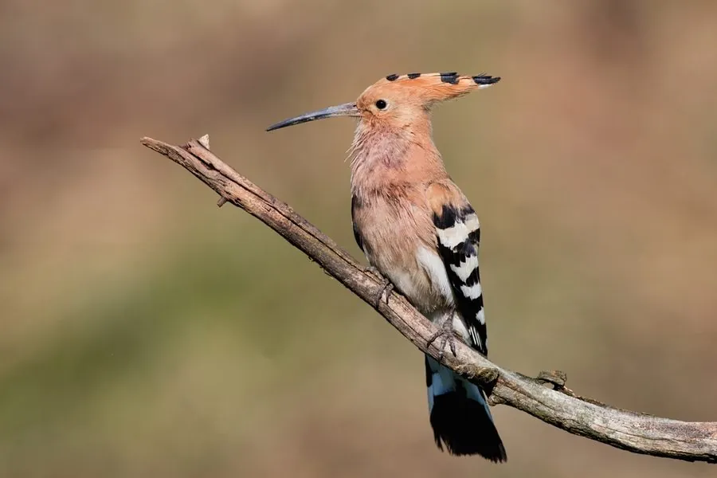

鸟类 · 动物界
戴胜 Upupa epops

头顶羽冠如折扇，棕橙色身躯配黑白横纹翅膀，起飞时羽冠展开，因体味特殊被民间称为“臭姑鸪”。
- 分类
- 门脊索动物门纲鸟纲目犀鸟目科戴胜科属戴胜属
- 栖息环境
- 农田、果园、草地、村庄与疏林边缘，常在翻耕过的土地和牲畜粪便附近觅食
- 地理分布
- 欧亚大陆和非洲广泛分布，中国大部分地区可见，北方多为夏候鸟
- 保护级别
- IUCN 无危（LC）；中国国家二级保护动物
物种志
戴胜体长 25–32 cm，翼展 44–48 cm，体重 46–89 g。它最醒目的特征是头顶的扇形羽冠，平时收拢成锤状，受惊或降落时会像折扇一样展开。头、颈和胸部呈棕橙色，翅膀和背部有黑白相间的横纹，喙细长而向下弯曲，飞行时一起一伏，像一只拍动翅膀的大蝴蝶。
戴胜广泛分布于欧亚大陆和非洲，中国大部分地区都能见到，北方种群多为夏候鸟。它喜欢在农田、果园、草地、村庄和疏林边缘活动，常用长喙插入土中挖食蝼蛄、金针虫、蚯蚓等地下昆虫，是农田里的益鸟。繁殖期在树洞、墙缝或石堆中营巢，每窝产卵 5–9 枚，孵化 15–18 天。雌鸟孵卵时尾脂腺会分泌出有臭味的液体，用于驱赶天敌，因此民间叫它“臭姑鸪”。
形态与习性
- 食性蝼蛄、金针虫、蚯蚓和昆虫幼虫，用长喙插入土中挖掘
- 体长25–32 cm
- 翼展44–48 cm
- 体重46–89 g
- 繁殖树洞或墙缝营巢，每窝 5–9 枚卵，孵化 15–18 天
- 羽冠受惊或降落时羽冠展开成扇形
- 寿命野外约 5–10 年
趣味知识
- 戴胜的羽冠平时收拢，受惊、降落或求偶时会像折扇一样展开。
- 雌鸟孵卵时尾脂腺会分泌有臭味的液体，所以民间叫它“臭姑鸪”。
- 戴胜常用长喙在土中挖食蝼蛄等地下害虫，是农田里的益鸟。
- 它飞行时翅膀一起一伏如波浪，黑白相间的翅纹在阳光下十分显眼。